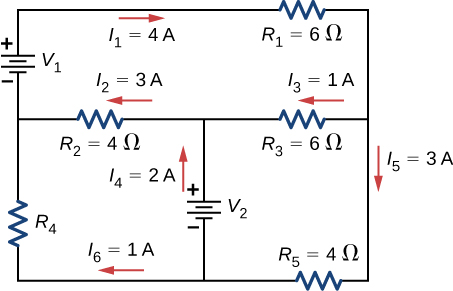
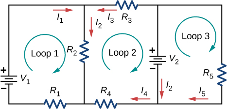

Phy 222 Homework 7: DC Circuits
Problem 7.1
A car battery with a \(12 \, \text{V}\) emf and an internal resistance of \(0.050 \, \Omega\) is being charged with a current of \(60 \, \text{A}\). Note that the battery is being charged.
- What is the potential difference across its terminals?
- At what rate is thermal energy being dissipated in the battery?
- At what rate is electric energy being converted into chemical energy?
Problem 7.2
What are the largest and smallest resistances you can obtain by connecting a \(36.0 \, \Omega\), a \(50.0 \, \Omega\), and a \(700 \, \Omega\) resistor together?
Problem 7.3
An \(1800 \, \text{W}\) toaster, a \(1400 \, \text{W}\) speaker, and a \(75 \, \text{W}\) lamp are plugged into the same outlet in a \(15 \, \text{A}\) fuse and \(120 \, \text{V}\) circuit. (The three devices are in parallel when plugged into the same socket.)
- What current is drawn by each device?
- Will this combination blow the \(15 \, \text{A}\) fuse?
Problem 7.4
The circuit shown is a voltage divider, where the symbol of three horizontal lines represents “ground,” defined as the point where the potential is zero. The voltage divider is commonly used to provide reduced voltage to a load resistor.
- What is the output voltage \(V_{\text{out}}\) of circuit (a) in terms of \(R_1\), \(R_2\), and \(V_{\text{in}}\)?
- What is the output voltage \(V_{\text{out}}\) of circuit (b) in terms of \(R_1\), \(R_2\), \(R_L\), and \(V_{\text{in}}\)?

Problem 7.5
Consider the circuit shown, where the terminal voltage of the battery is \(V = 18.00 \, \text{V}\).
- Find the equivalent resistance of the circuit.
- Find the current through each resistor.
- Find the potential drop across each resistor.
- Find the power dissipated by each resistor.
- Find the power supplied by the battery.

Problem 7.6
Consider the circuit shown.
- Determine the equivalent resistance and the current from the battery with switch \(S_1\) open.
- Determine the equivalent resistance and the current from the battery with switch \(S_1\) closed.

Problem 7.7
Consider the circuit shown.
- Find the voltage across each resistor.
- What is the power supplied to the circuit and the power dissipated or consumed by the circuit?

Problem 7.8
Consider the circuit shown. Find \(V_1\), \(V_2\), and \(R_4\).

Problem 7.9
Consider the circuit shown. Write the three loop equations for the loops.

Problem 7.10
A homemade capacitor is constructed of \(2\) sheets of aluminum foil with an area of \(2.00 \, \text{m}^2\), separated by paper of thickness \(0.05 \, \text{mm}\), with the same area and a dielectric constant of \(3.7\). The capacitor is connected in series with a \(100.00 \, \Omega\) resistor, a switch, and a \(6.00 \, \text{V}\) voltage source.
- What is the RC time constant of the circuit?
- What is the initial current through the circuit when the switch is closed?
- How long does it take the current to reach one third of its initial value?
Problem 7.11
A heart defibrillator being used on a patient has an RC time constant of \(10.0 \, \text{ms}\) due to the resistance of the patient and the capacitance of the defibrillator.
- If the defibrillator has a capacitance of \(8.00 \, \mu\text{F}\), what is the resistance of the path through the patient? (Neglect the capacitance of the patient and the resistance of the defibrillator.)
- If the initial voltage is \(12.0 \, \text{kV}\), how long does it take to decline to \(6.00 \times 10^2 \, \text{V}\)?
Problem 7.12
Consider the circuit shown below:
- What is the RC time constant of the circuit?
- What is the initial current in the circuit once the switch is closed?
- How much time passes between the instant the switch is closed and the time the current has reached half of the initial current?

\(~\)